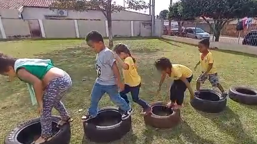
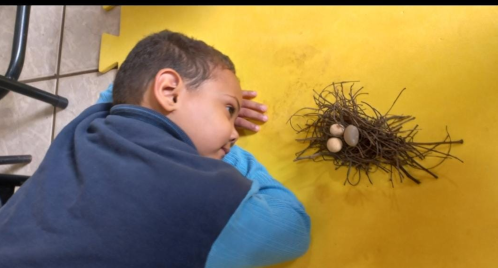

Endereço para contato:
drilealmeida@hotmail.com 67-981301544
Selvíria-MS
67-981301544
Selvíria-MS

Brincar com pneu trabalha nas crianças diversas habilidades motoras fundamentais como locomoção (correr, saltar, rolar), e de estabilidade (equilibrar-se sobre uma perna em cima do pneu, etc) (GALLAHUE; OZMUN; GOODWAY, 2013; RUDD et al., 2015)
😀Veja mais sobre o plano de aula Clik aqui

Diante das habilidades apresentadas temos como objetivo maior transmitir para as crianças conhecimentos sobre as aves. O objetivo geral dessas aula, é o de incentivar as crianças a valorizar os passaros e identificar atráves das brincadeiras conhecimentos sobre brincadeiras com pedrinhas.
Veja mais sobre o plano de aula Clik aqui
Diante da atividade apresentada temos como objetivo maior transmitir para as crianças conhecimentos sobre as pipas. O objetivo geral dessas aula, é incentivar as crianças a soltar pipas desde a Educação Infantil.
Veja mais sobre o plano de aula Clik aqui

Desenvolvimento: Observar se as crianças vão explorar suas diversas habilidades motoras, como girar, correr, saltar etc. Observar as interações uns com os outros através das atividades.
Veja mais sobre o plano de aula Clik aqui